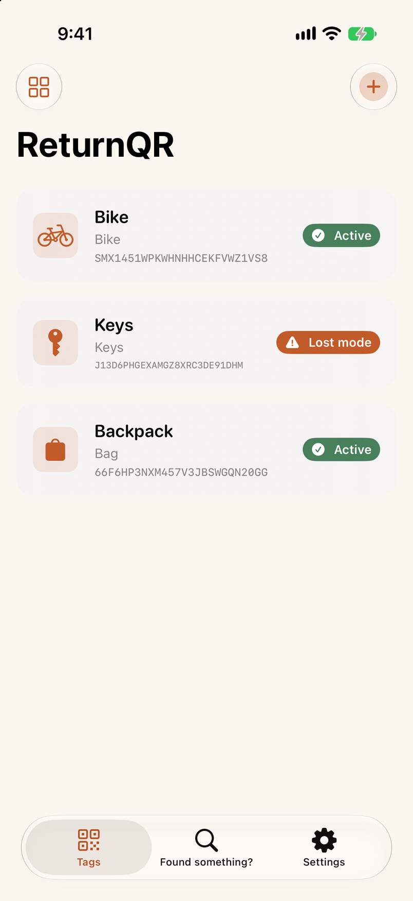
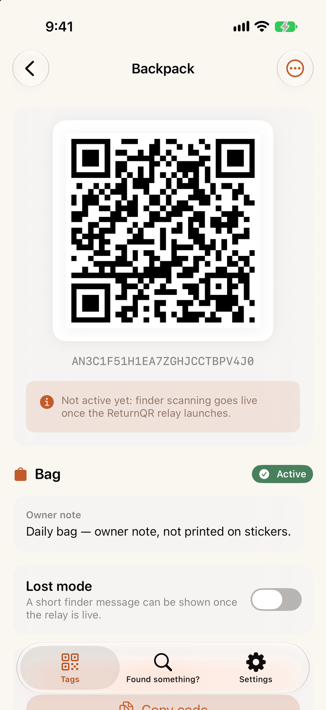
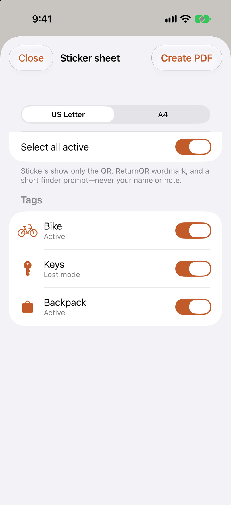
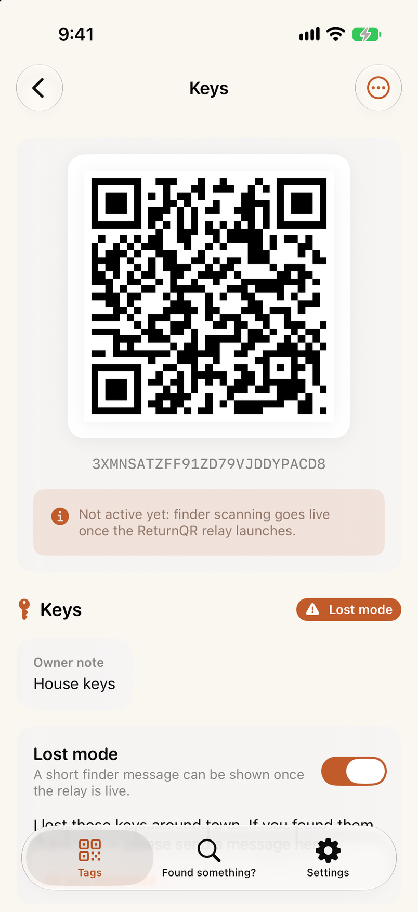

Label · iPhone · not live yet
A QR sticker that keeps your number off the thing you lost.
You print a code, stick it on a bag, a key ring, or a bike. If someone finds it, they can scan the sticker and send you a note — without seeing a phone number or an email address.

How it works
What the app on your phone actually does today, and what is still waiting on a live relay.
-
01 · Make a tag
A long, random code — not your name
Each tag gets an unguessable public code and a QR image. The sticker does not print your phone number or email, and the code itself is not a contact directory.
-
02 · Print the sheet
Pick tags, then export a PDF
The sticker sheet lists your tags so you can choose which ones to print. The app’s own note on that screen is that a sticker shows only the QR, the ReturnQR wordmark, and a short finder prompt — never your name or owner note.
-
03 · Lost mode, or retire it
Mark it lost, or turn the tag off
If something goes missing, you can switch that tag into lost mode and write a short finder message. If you stop using a sticker, you can deactivate the tag so it is no longer treated as yours.
-
04 · A finder scan
The QR is not a live inbox yet
Each tag screen says so in plain language: finder scanning is not active yet, and goes live once a ReturnQR relay launches. Until then the code points at a clearly inactive placeholder. The app has a local stand-in so the flow can be designed; it does not send mail or texts, and it does not collect a finder’s number.
The app
Screens from the iPhone outline, with sample tags (Backpack, Keys, Bike) used only to show the layout.



Privacy
The point of the sticker is that a stranger can help without being handed a way to keep calling you.
-
The sticker
No number, no email on the label
ReturnQR is built so your phone number and email are not printed on the sticker and are not encoded in the QR as readable contact details.
-
The relay
A message path, when one exists
When a live relay is approved, a finder should only be able to reach you through it. Until then, scans do not go anywhere off the device. This site does not run a relay either.
-
Limits
Rate limits, block, and report
The outline already includes caps on how often a code can be messaged, plus hooks to block a sender or report abuse and to deactivate a tag. Those only matter once a real relay is running.
-
This site
No trackers, and no claimed launch
This page has no analytics, ads, or other tracking. ReturnQR is not available to download. A full privacy policy will be posted here when the app is ready.